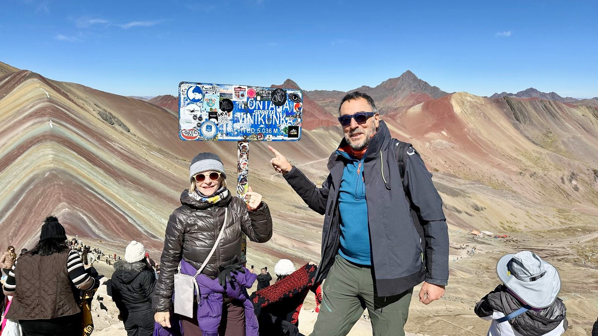

Capítulo 08 / 09
Montaña de los siete colores
Vinicunca: el camino hacia la montaña de los siete colores y las vistas desde la cima, a 5.036 metros.

Capítulo 08 / 09
Vinicunca: el camino hacia la montaña de los siete colores y las vistas desde la cima, a 5.036 metros.
